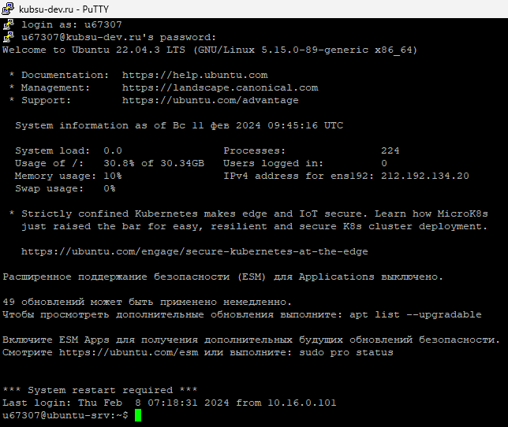
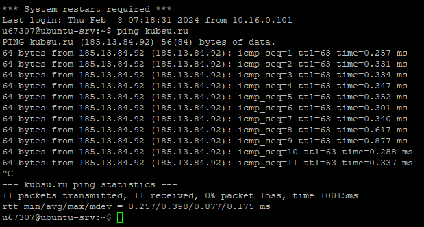
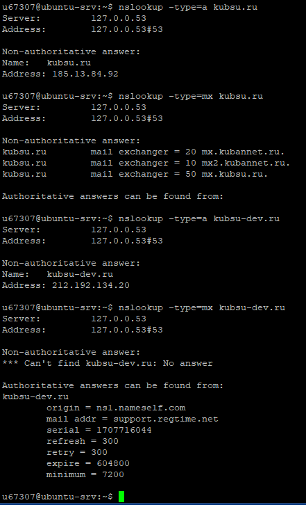
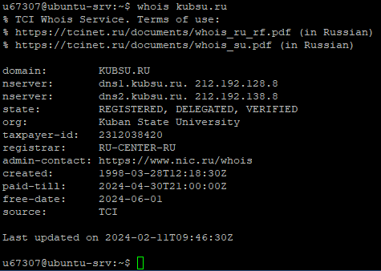
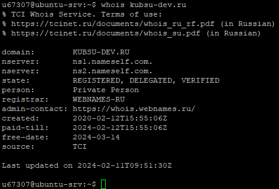
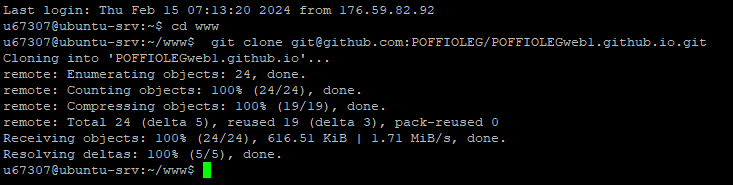
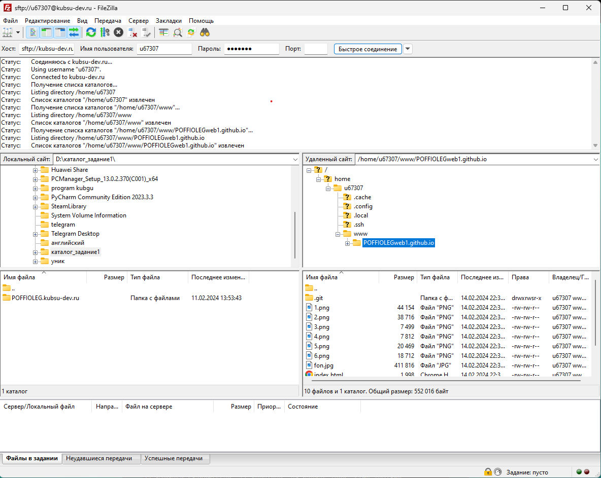
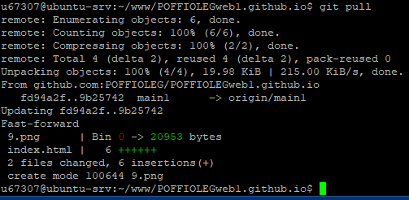

Пункты выполненых скриншотов задания-1
Скриншот подключения к серверу kubsu-dev.ru

Скриншот получения IP-адреса kubsu.ru с помощью команды ping

Скриншот получения A-записи и MX-записи домена kubsu.ru и домена kubsu-dev.ru
А-запись указывает адрес, куда должен ссылаться Ваш домен.
MX-запись отвечает за возможность работать с электронной почтой в вашем доменном имени
nslookup — утилита, предоставляющая пользователю интерфейс командной строки для обращения к системе DNS (проще говоря, DNS-клиент). Позволяет задавать различные типы запросов и опрашивать произвольно указываемые сервера.

Скриншот получения даты регистрации домена kubsu.ru

Скриншот получения даты регистрации домена kubsu-dev.ru

Скриншот клонирования репозитория с github на сервер kubsu-dev.ru

С помощью программы FileZilla SFTP соединиться с учебным сервером с вашим логином и паролем по протоколу SFTP и скопировать на локальный компьютер файлы задания из каталога www.

Скриншот подгрузки комита на сервер
